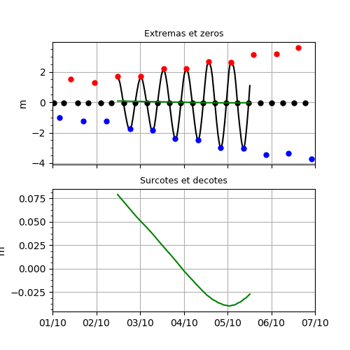

1.3.5.3. Diagnostics marégraphique de hauteur d’eau¶
Voir : Marigraph.

Calcul des extremas en haut et surcotes/decotes en bas.
# -*- coding: utf8 -*-
# Lecture du niveau de la mer
import cdms2
from vacumm.config import data_sample
f = cdms2.open(data_sample('tide.sealevel.BREST.mars.nc'))
sea_level = f('sea_level', time=('2006-10', '2006-10-07'))
f.close()
# Initialisation de l'objet marégraphique
from vacumm.tide.marigraph import Marigraph
mg = Marigraph(sea_level, verbose=True)
# Extraction du signal de maree
tide = mg.tide(tide_filter='demerliac')
# On peut aussi specifier le filtre avec :
mg.set_tide_filter('demerliac') # On peut aussi choisir 'godin'
# Calcul surcotes/decotes
cotes = mg.cotes()
# Calcul des pleines et basses mers
ref = 'mean'
highs = mg.highs(ref=ref)
lows = mg.lows(ref=ref)
zeros = mg.zeros(ref=ref)
# On plot
import pylab as P
P.rc('font', size=10)
P.figure(figsize=(5, 5))
kwplot = dict(date_fmt='%d/%m', date_locator='day', show=False, hspace=.2, left=.15)
# - tout sauf le signal d'origine
P.subplot(211)
mg.plot(orig=False, tide_color='k', title='Extremas et zeros', xhide=True, **kwplot)
# - seules les surcotes decotes
P.subplot(212)
mg.plot('cotes', savefigs=__file__, savefigs_pdf=True, title='Surcotes et decotes', **kwplot)
P.close()